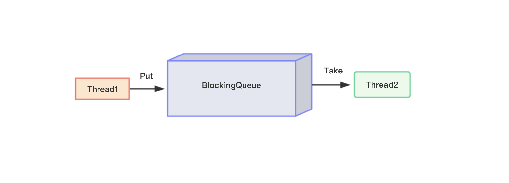
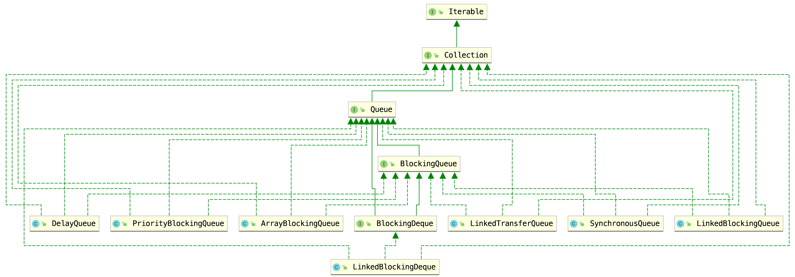
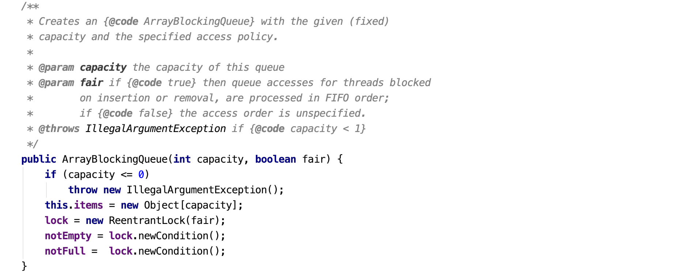
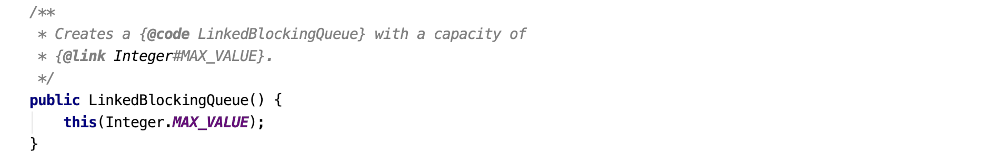

BlockingQueue即阻塞队列，一个阻塞队列在数据结构中起到的作用大致如下图所示：

上图中，线程1往阻塞队列中添加元素，线程2从阻塞队列中移出元素。当阻塞队列是空的时候，从队列中获取元素的操作将会被阻塞；当阻塞队列是满的时候，往队列中添加元素的操作将会被阻塞。
使用BlockingQueue的好处是，我们不需要关心什么时候需要阻塞线程，什么时候需要唤醒线程，这些都由BlockingQueue自定完成。
7大实现类
BlockingQueue是一个接口类，主要有7种实现类型，UML类图如下所示：

- ArrayBlockingQueue：由数组机构组成的有界阻塞队列；
- LinkedBlockingQueue：由链表结构组成的有界（默认大小非常大，为Integer.MAX_VALUE）阻塞队列；
- PriorityBlockingQueue：一个支持优先级排序的无界阻塞队列；
- DelayQueue：一个使用优先级队列实现的无界阻塞队列；
- SynchronousQueue：一个不存储元素的阻塞队列；
- LinkedTransferQueue：一个由链表结构组成的无界阻塞队列；
- LinkedBlockingDeque：一个由链表结构组成的双向阻塞队列。
前六种都是单向队列，实现的是BlockingQueue接口，LinkedBlockingDeque是一个双向队列，实现的是BlockDeque接口，该接口继承了BlockingQueue接口。
常用方法
BlockingQueue的相关方法大致可以分为以下四种类型：
| 方法描述 | 抛出异常 | 返回特殊的值 | 一直阻塞 | 超时退出 |
|---|---|---|---|---|
| 插入数据 | add(e) | offer(e) | put(e) | offer(e,time,unit) |
| 获取并移除队列的头 | remove() | poll() | take() | poll(time,unit) |
| 获取但不移除队列的头 | element() | peek() | 不可用 | 不可用 |
抛出异常：当阻塞队列满时，再往队列里add插入元素就会抛出IllegalStateException: Queue full；当阻塞队列空时，再往队列里remove移出元素就会抛出NoSuchElementException；
返回特殊值：插入方法，成功时返回true，失败时返回false；移出方法，成功时候返回移出队列的元素，没有元素就返回null；
一直阻塞：当阻塞队列满时，如果生产者线程往队列里put元素，队列会一直阻塞生产者线程，直到拿到数据，或者响应中断退出。当队列空时，消费者线程试图从队列里take元素，队列也会阻塞消费者线程，直到队列可用；
超时退出：当阻塞队列满时，队列会阻塞生产者线程一段时间，如果超过一定的时间，生产者线程就会退出。
BlockDeque也提供了这四种类型对应的方法，不过由于是双向队列，所以这些方法可以分为头部操作和尾部操作：
头部操作：
| 方法描述 | 抛出异常 | 返回特殊的值 | 一直阻塞 | 超时退出 |
|---|---|---|---|---|
| 插入数据 | addLast(e) | offerLast(e) | putLast(e) | offerLast(e, time, unit) |
| 获取并移除队列的头 | removeLast() | pollLast() | takeLast() | pollLast(time, unit) |
| 获取但不移除队列的头 | getLast() | peekLast() | 不适用 | 不适用 |
尾部操作：
| 方法描述 | 抛出异常 | 返回特殊的值 | 一直阻塞 | 超时退出 |
|---|---|---|---|---|
| 插入数据 | addLast(e) | offerLast(e) | putLast(e) | offerLast(e, time, unit) |
| 获取并移除队列的头 | removeLast() | pollLast() | takeLast() | pollLast(time, unit) |
| 获取但不移除队列的头 | getLast() | peekLast() | 不适用 | 不适用 |
简单介绍
ArrayBlockingQueue
ArrayBlockingQueue是一个用数组实现的有界阻塞队列。此队列按照先进先出（FIFO）的原则对元素进行排序。默认情况下不保证访问者公平的访问队列，所谓公平访问队列是指阻塞的所有生产者线程或消费者线程，当队列可用时，可以按照阻塞的先后顺序访问队列，即先阻塞的生产者线程，可以先往队列里插入元素，先阻塞的消费者线程，可以先从队列里获取元素。通常情况下为了保证公平性会降低吞吐量。我们可以使用以下代码创建一个公平的阻塞队列：
1 | ArrayBlockingQueue<String> fairArrayBlockingQueue = new ArrayBlockingQueue<>(5, true); |
上面代码指定了一个初始大小为5的公平的ArrayBlockingQueue。访问者的公平性是使用可重入锁实现的，构造器源码如下：

LinkedBlockingQueue
LinkedBlockingQueue是一个用链表实现的有界阻塞队列。此队列按照先进先出的原则对元素进行排序。此队列的默认和最大长度为Integer.MAX_VALUE：

所以推荐的做法是不要使用无参构造器，而是通过有参构造器指定容器的初始大小。
PriorityBlockingQueue
PriorityBlockingQueue是一个支持优先级的无界队列。默认情况下元素采取自然顺序排列，也可以通过比较器comparator来指定元素的排序规则。元素按照升序排列。
DelayQueue
DelayQueue也是一个无界阻塞队列，只有在延迟期满时才能从中提取元素。DelayQueue的所有方法只能操作“到期的元素“，例如，poll()、remove()、size()等方法，都会忽略掉未到期的元素。 我们可以将DelayQueue运用在以下应用场景：
缓存系统的设计：可以用DelayQueue保存缓存元素的有效期，使用一个线程循环查询
DelayQueue，一旦能从DelayQueue中获取元素时，表示缓存有效期到了；定时任务调度。使用
DelayQueue保存当天将会执行的任务和执行时间，一旦从DelayQueue中获取到任务就开始执行。
DelayQueue的实现是基于PriorityQueue，是一个优先级队列，是以延时时间的长短进行排序的。所以，DelayQueue需要知道每个元素的延时时间，而这个延时时间是由Delayed接口的getDelay()方法获取的。所以，DelayQueue的元素必须实现Delayed接口。
SynchronousQueue
SynchronousQueue是一个不存储元素的阻塞队列。每一个put操作必须等待一个take操作，否则不能继续添加元素。SynchronousQueue可以看成是一个传球手，负责把生产者线程处理的数据直接传递给消费者线程。队列本身并不存储任何元素，非常适合于传递性场景,比如在一个线程中使用的数据，传递给另外一个线程使用。
LinkedTransferQueue
LinkedTransferQueue是一个由链表结构组成的无界阻塞TransferQueue队列。相对于其他阻塞队列LinkedTransferQueue多了tryTransfer和transfer方法。
transfer方法：如果当前有消费者正在等待接收元素（消费者使用take()方法或带时间限制的poll()方法时），transfer方法可以把生产者传入的元素立刻transfer（传输）给消费者。如果没有消费者在等待接收元素，transfer方法会将元素存放在队列的tail节点，并等到该元素被消费者消费了才返回。tryTransfer方法。则是用来试探下生产者传入的元素是否能直接传给消费者。如果没有消费者等待接收元素，则返回false。和transfer方法的区别是tryTransfer方法无论消费者是否接收，方法立即返回。而transfer方法是必须等到消费者消费了才返回。我们也可以使用重载方法tryTransfer(E e, long timeout, TimeUnit unit)指定超时时间。
LinkedBlockingDeque
LinkedBlockingDeque是一个由链表结构组成的双向阻塞队列。所谓双向队列指的你可以从队列的两端插入和移出元素。双端队列因为多了一个操作队列的入口，在多线程同时入队时，也就减少了一半的竞争。相比其他的阻塞队列，LinkedBlockingDeque多了一些首尾元素的操作方法，具体可以参考上面的表格。